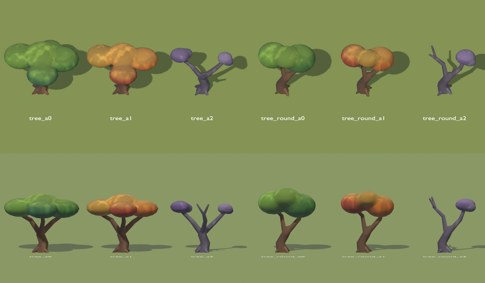
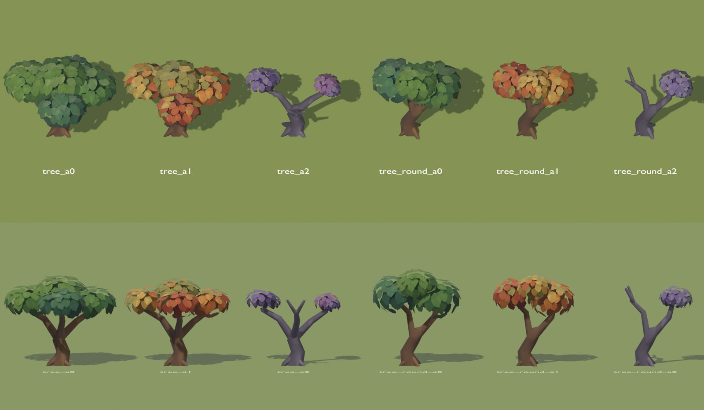
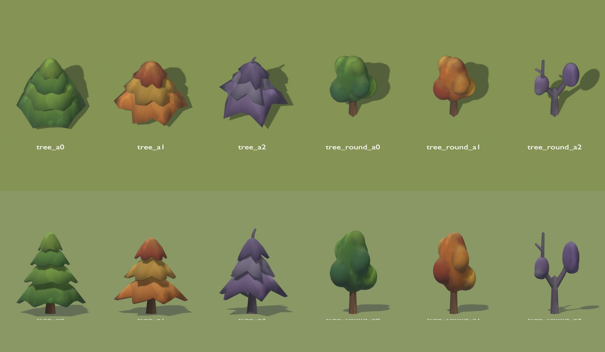
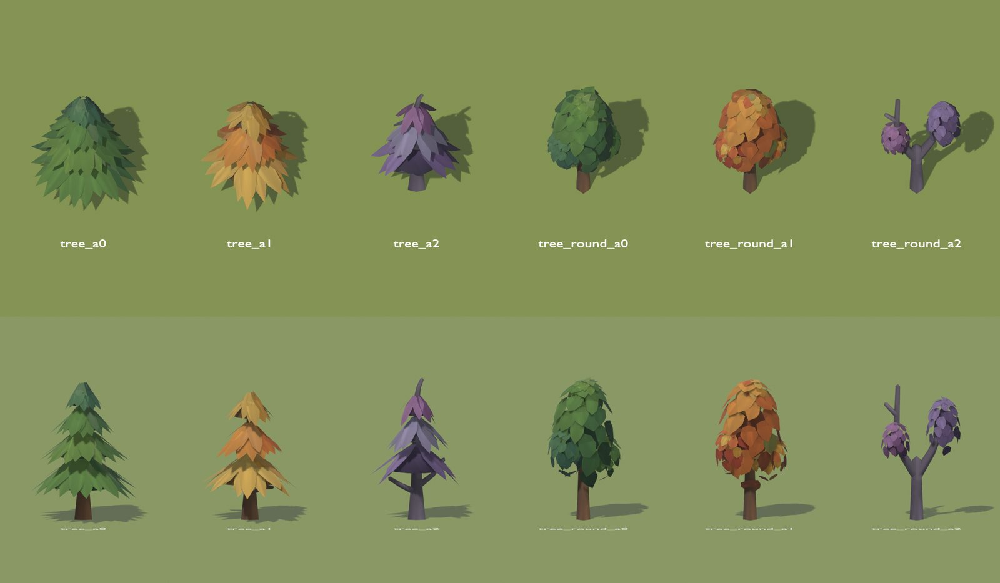
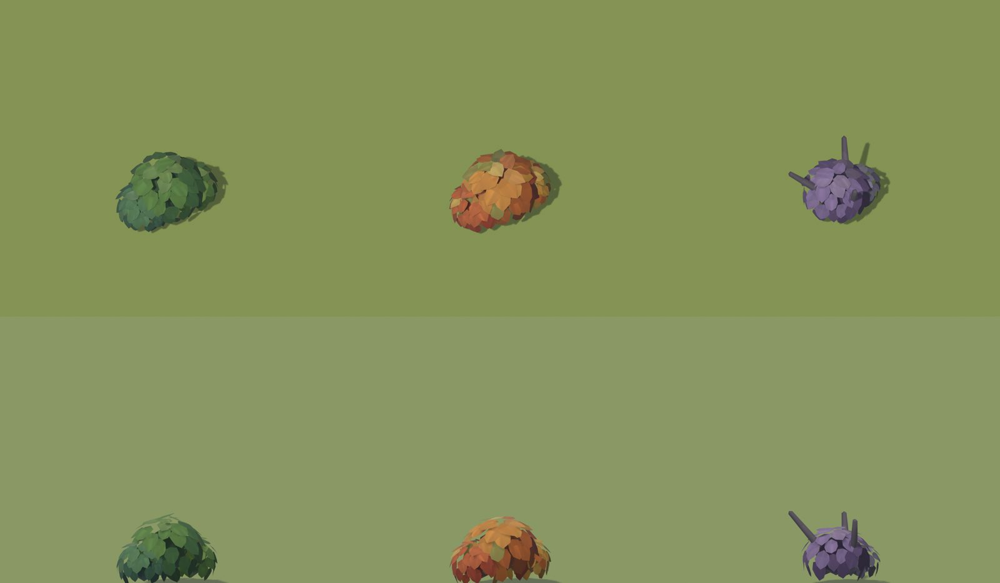

Last Boss · rodada de 22/11
Árvores e Chão
As árvores e arbustos refeitos em pinceladas e quatro texturas novas para o chão e a estrada. Arraste a linha em cada imagem para comparar com o de antes, depois escolha. Sua escolha fica salva num arquivo do projeto e eu leio de lá.
Decisão 1
Árvores e arbustos
Antes, a copa era um punhado de bolas fundidas e alisadas, com sombra em degradê: parecia massinha. Agora cada tufo é um miolo escuro coberto de pinceladas angulosas, cada uma com uma cor chapada só, como o guache das cartas. Mesmos formatos que você aprovou em 21/11 (carvalho, carvalho torto, pinheiro e álamo) e arbustos novos por ato. Nesta comparação o chão é o de antes, para julgar só as árvores.
Arraste para a direita para ver mais do antes.
Ver as pranchas das árvores (todas as peças, nos 3 atos)





Decisão 2
Textura do chão e da estrada
O chão de antes somava manchas em várias escalas, um relevo falso e pinceladas por cima, e virava borrão. Cada estilo novo é uma ideia de pintura só, sem relevo falso, e a estrada fica cor de areia como os caminhos das cartas (antes saía vermelho-rosado). Todos já com as árvores novas. Toque num estilo para vê-lo grande.
Opcional
Algum ajuste?
Conectando para salvar…